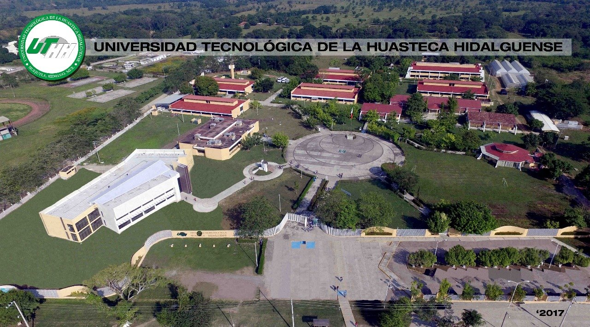

Vision
Ser una institución de educación superior tecnológica reconocida a nivel nacional e internacional por la calidad de sus programas educativos, la pertinencia de sus servicios, la innovación en sus procesos y la formación de profesionistas íntegros, competitivos y comprometidos con el desarrollo sustentable, que contribuyan al progreso social, económico y tecnológico del estado y del país
La Universidad Tecnológica de la Huasteca Hidalguense (UTHH) busca consolidarse como un referente académico que impulse la transformación tecnológica y social de la región. Su propósito es mantener una educación de excelencia, actualizada y orientada al desarrollo de competencias que respondan a las demandas del sector productivo y de la sociedad contemporánea
A través de la innovación, la investigación aplicada y la vinculación estratégica con empresas, instituciones y comunidades, la UTHH promueve una formación integral que fortalece las habilidades técnicas, humanas y éticas de sus estudiantes. Asimismo, la universidad se proyecta como un espacio de inclusión, equidad y sostenibilidad, en el que se fomente el uso responsable de la tecnología y la generación de soluciones que beneficien el entorno local y nacional. Con esta visión, la UTHH reafirma su compromiso de seguir formando profesionistas líderes, responsables y visionarios, capaces de contribuir activamente al progreso científico, económico y social de México.
